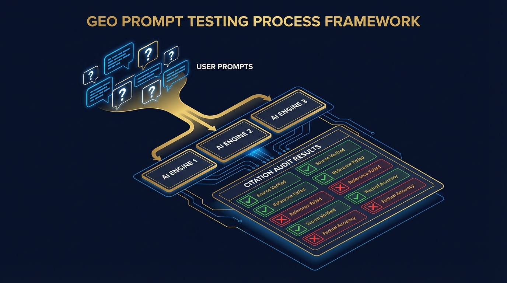
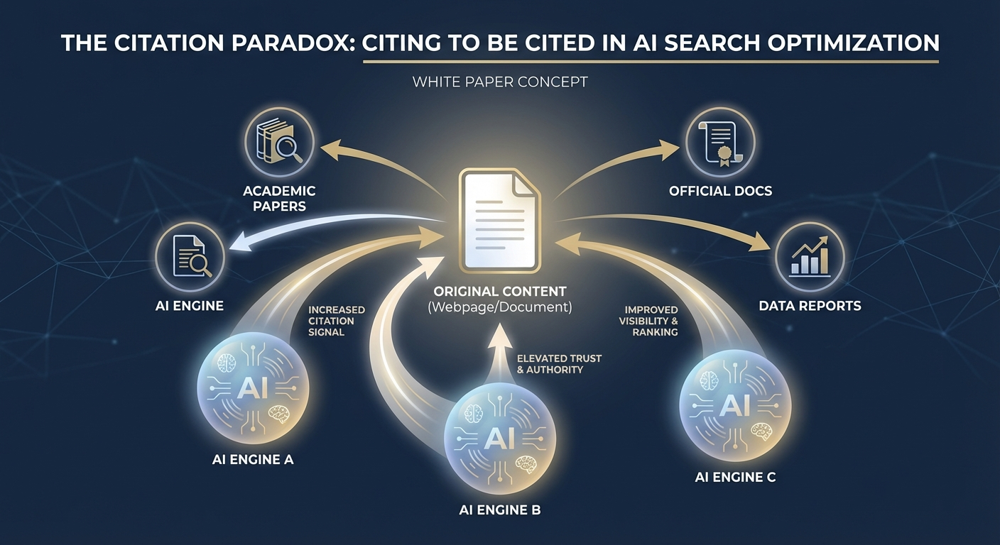

Whitepaper: The GEO Imperative — Why Generative Engine Optimization Is the Most Important Marketing Discipline of the Next Decade
| Deep dive whitepaper expanding on the GEO research entry. Covers three tactical layers: (1) Prompt engineering for GEO testing, (2) Content reformatting playbook for AI citability, (3) GEO for solo builders and small brands. | |
| https://lseo.com/generative-engine-optimization/ | |
| An opinionated whitepaper arguing that GEO is the defining marketing discipline of the AI era, with deep tactical playbooks for prompt-level testing, content reformatting, and GEO for solo builders. | |
"The best time to optimize for AI search was two years ago. The second best time is today."
Executive Summary
This whitepaper argues that Generative Engine Optimization (GEO) is the single most important marketing discipline to emerge in the last decade — and that most businesses, marketers, and content creators are dangerously behind.
The evidence is unambiguous: AI-powered search engines are rapidly absorbing the informational and research queries that have driven organic traffic for twenty years. The brands that learn to earn citations and recommendations inside AI-generated answers will dominate their markets. Those that don't will become invisible — not because they stopped ranking on Google, but because ranking on Google stopped mattering for the queries that drive discovery.
This is not a theoretical argument. It's happening now. And the window for first-mover advantage is closing.
This paper provides:
- The strategic case for treating GEO as a top-level business priority
- Three deep tactical playbooks for immediate implementation:
- Prompt engineering for GEO testing
- Content reformatting for AI citability
- GEO for solo builders and small brands
- A practical framework for integrating GEO into existing marketing operations
{kind=link}
Part I: The Strategic Case for GEO
The Tectonic Shift Beneath Search
For over two decades, the contract between brands and search engines was simple: create content, optimize it for keywords, earn backlinks, and Google will send you traffic. This contract built trillion-dollar ecosystems — SEO agencies, content marketing departments, analytics platforms, and an entire industry of tools and consultants.
That contract is being rewritten.
Gartner predicts that traditional search engine volume will decline by 25% by 2026. SparkToro's research shows that 60% of Google searches already end without a click. ChatGPT has over 200 million weekly active users. Google itself has embedded AI-generated answers at the top of its own search results via AI Overviews.
The implications are profound:
- Informational queries — "What is the best tool for X?", "How do I solve Y?" — are increasingly answered by AI, not by clicking through to websites
- Research queries — "Compare A vs. B", "What are the pros and cons of Z?" — are synthesized by AI from multiple sources, with only the cited sources earning visibility
- Discovery queries — "What companies do X?" — generate AI recommendations that function as algorithmic endorsements, far more powerful than a position on page 1
The brands that appear in these AI-generated answers get seen. The brands that don't, don't. It's that binary.
Why This Is Different from Every Previous SEO Shift
The SEO industry has weathered many algorithm changes — Panda, Penguin, Hummingbird, BERT. Each required tactical adjustments, but the fundamental model remained the same: optimize content → rank higher → earn clicks.
GEO is not a tactical adjustment. It's a paradigm shift. The fundamental model is changing:
- Old model: Optimize content → rank higher → earn clicks from a list of results
- New model: Create authoritative, citable content → earn citations inside AI-generated answers → earn trust, recommendations, and (sometimes) clicks
The difference is structural. In the old model, you competed for position in a list. In the new model, you compete to be included in the answer itself. There is no "page 2" of an AI response. You're either cited or you're not. You're either recommended or your competitor is.
This is why GEO matters more than any SEO update that came before it. It's not about ranking better — it's about existing in the new medium of discovery.
The First-Mover Window
We are in the early innings of this transition. Most businesses are still focused on traditional SEO. Most marketing teams haven't even heard the term "GEO." Most content strategies are still designed for the keyword-ranking paradigm.
This creates a massive first-mover advantage for those who act now:
- Less competition for AI citations compared to the hyper-competitive traditional SEO landscape
- Compounding authority — AI engines learn which sources are reliable over time; early movers build trust that compounds
- Strategic positioning — Being among the first in your niche to be consistently cited by AI engines positions you as the default authority
- Learning advantages — Understanding what works in GEO requires experimentation; starting early gives you more cycles of learning
The window won't last. As awareness grows, the competitive landscape will intensify. The brands that established their AI visibility early will have an entrenched advantage — much like the brands that dominated SEO in the early 2000s still benefit from that authority today.
The GEO Strategic Framework
The following diagram maps the complete GEO strategy — from foundation through execution — showing how each layer builds on the ones below it.
flowchart TB
subgraph FOUNDATION["🏗️ FOUNDATION: Traditional SEO"]
direction LR
A1["Technical Health<br>Crawlability, Speed, Schema"]
A2["Content Index<br>Indexed, Authoritative Pages"]
A3["Backlink Authority<br>Domain Trust Signals"]
end
subgraph INTELLIGENCE["🔍 INTELLIGENCE: GEO Prompt Testing"]
direction LR
B1["Build Prompt Library<br>50-100 Target Prompts"]
B2["Multi-Engine Audit<br>ChatGPT · Gemini · Perplexity"]
B3["Citation Analysis<br>Wins · Gaps · Opportunities"]
end
subgraph OPTIMIZATION["⚡ OPTIMIZATION: Content Reformatting"]
direction LR
C1["Quotable Definitions<br>Lead with direct answers"]
C2["Statistics & Citations<br>The Citation Paradox"]
C3["Structured Extraction<br>Tables, Lists, FAQ Schema"]
C4["Freshness Signals<br>Updated dates & data"]
end
subgraph GROWTH["🚀 GROWTH: New GEO-Native Content"]
direction LR
D1["Target Prompt Gaps<br>Content competitors miss"]
D2["Content Clusters<br>Pillar + 8-12 supporting"]
D3["Emerging Topics<br>Speed to authority"]
end
subgraph AUTHORITY["👑 AUTHORITY: Compounding Visibility"]
direction LR
E1["Cross-Platform Presence<br>Site · GitHub · LinkedIn · YouTube"]
E2["Personal Brand<br>Named expert authority"]
E3["AI Visibility Monitoring<br>Monthly prompt audits"]
end
subgraph OUTCOME["🎯 OUTCOME"]
F1["Cited by AI Engines<br>Recommended to Users<br>Trusted as Authority"]
end
FOUNDATION --> INTELLIGENCE
INTELLIGENCE --> OPTIMIZATION
OPTIMIZATION --> GROWTH
GROWTH --> AUTHORITY
AUTHORITY --> OUTCOME
OUTCOME -->|"Feedback Loop"| INTELLIGENCE
style FOUNDATION fill:#1a1a2e,stroke:#4a9eff,color:#fff
style INTELLIGENCE fill:#1a1a2e,stroke:#ffd700,color:#fff
style OPTIMIZATION fill:#1a1a2e,stroke:#4a9eff,color:#fff
style GROWTH fill:#1a1a2e,stroke:#ffd700,color:#fff
style AUTHORITY fill:#1a1a2e,stroke:#4a9eff,color:#fff
style OUTCOME fill:#0d2137,stroke:#ffd700,color:#fff
style F1 fill:#0d2137,stroke:#ffd700,color:#ffd700Part II: The Thesis — GEO Is the Defining Marketing Discipline of the AI Era
An Opinionated Stance
Let me be direct: if you are a marketer, content creator, or business owner and you are not actively working on GEO, you are making a strategic mistake.
This is not hyperbole. Consider:
- AI search adoption is not optional. Google — the company that controls 90%+ of search — is putting AI answers at the top of its own results. Your users are encountering AI-generated answers whether they sought them out or not.
- Traditional SEO ROI will erode. As more queries are answered directly by AI, the click-through rates from traditional organic listings will decline. The same SEO investment will yield fewer visits. This isn't speculation — the zero-click trend has been accelerating for years.
- AI citations are the new backlinks. In the traditional SEO era, backlinks from authoritative sites were the primary currency of trust. In the GEO era, being cited by AI engines is the new backlink — a signal of authority that compounds over time and influences which sources AI engines trust in the future.
- Brand recommendations from AI engines are extraordinarily powerful. When a user asks ChatGPT "What's the best tool for project management?" and ChatGPT recommends your product, that carries more weight than any ad, any review site, any organic ranking. It's a trusted recommendation from a perceived expert — and it's delivered at the exact moment of intent.
- The cost of inaction is invisibility. This is the key point. In the traditional SEO era, poor optimization meant you ranked on page 3 instead of page 1. You were still indexable, still discoverable with effort. In the GEO era, failing to optimize means you don't exist in the AI answer. Your competitor is recommended. You are not mentioned. There is no page 3 of an AI response to fall back to.
What GEO Is Really About
At its core, GEO is about a simple shift in mindset:
Stop optimizing for algorithms. Start optimizing for AI understanding.
This means:
- Writing content that AI engines can understand, extract, and synthesize — not just content that matches keyword patterns
- Building authority that AI engines recognize as trustworthy — not just domain authority measured by backlink tools
- Creating content structures that make your expertise quotable — not just comprehensive pages that rank for long-tail queries
- Thinking in terms of prompts and conversations, not keywords and SERPs
Part III: Deep Tactical Layer 1 — Prompt Engineering for GEO Testing
The Concept: Reverse-Engineer AI Citations
Before you can optimize for AI search, you need to understand how AI engines currently see your brand and your competitors. This requires a disciplined, systematic approach to querying AI engines and analyzing their responses.
I call this GEO Prompt Testing — the practice of crafting and running prompts against AI engines to audit your current citation landscape, identify gaps, and discover opportunities.
This is the GEO equivalent of keyword research in traditional SEO. Except instead of finding which keywords have volume and low competition, you're finding which prompts cite you, which cite competitors, and which cite nobody you'd expect.
{kind=link}

The GEO Prompt Testing Framework
Step 1: Build Your Prompt Library
Start by building a comprehensive library of prompts that represent how your target audience would ask AI engines about your industry, products, and expertise. Categories include:
Discovery prompts ("What" and "Who" questions):
- "What is the best [product category] for [use case]?"
- "Who are the leading [industry] companies?"
- "What tools do professionals use for [task]?"
- "What companies specialize in [service]?"
Comparison prompts ("Which" and "vs" questions):
- "[Your brand] vs [competitor] — which is better for [use case]?"
- "What are the alternatives to [competitor]?"
- "Compare the top 5 [product category] options"
Educational prompts ("How" and "Why" questions):
- "How do I [task your product helps with]?"
- "What's the best approach to [problem you solve]?"
- "Why is [concept in your expertise] important?"
Recommendation prompts (direct buying intent):
- "I need a [product] that does [specific feature]. What do you recommend?"
- "I'm a [persona] looking for [solution]. What should I use?"
- "What's the most cost-effective [product category] for [constraint]?"
Reputation prompts (brand-specific):
- "What is [your brand]?"
- "Is [your brand] good for [use case]?"
- "What do people say about [your brand]?"
Aim for 50–100 prompts minimum. This is your GEO keyword research equivalent.
Step 2: Run Multi-Engine Audits
Run each prompt across at least three AI engines:
- ChatGPT (the largest user base)
- Perplexity (the most citation-transparent)
- Google Gemini (the most Google-integrated)
For each prompt, record:
| Data Point | What to Record |
|---|---|
| Mentioned? | Was your brand mentioned at all? (Yes/No) |
| Cited? | Was your brand cited with a source link? (Yes/No) |
| Recommended? | Was your brand recommended as a solution? (Yes/No/Neutral mention) |
| Position | Where in the response? (First mentioned, middle, end) |
| Accuracy | Was the description of your brand accurate? (Accurate/Partially/Inaccurate) |
| Competitors cited | Which competitors were mentioned or recommended instead? |
| Source URLs | What source URLs did the AI engine link to? (Especially in Perplexity) |
Step 3: Analyze the Citation Landscape
With your audit data, you can now identify:
- Prompt wins: Where you're already being cited — protect and reinforce these
- Prompt gaps: Where competitors are cited but you're not — these are your highest-priority optimization targets
- Prompt opportunities: Where nobody relevant is being cited well — these are blue ocean opportunities to establish authority
- Accuracy issues: Where AI engines misrepresent your brand — these need immediate correction through content updates
- Engine-specific patterns: Where you perform well on one engine but poorly on another — this reveals engine-specific optimization opportunities
Step 4: Build a Testing Cadence
GEO is not a one-time audit. AI engines update their knowledge bases continuously. Establish a monthly testing cadence:
- Re-run your top 20 prompts monthly across all three engines
- Track changes: Did you gain or lose citations? Did accuracy improve?
- Add new prompts as you identify emerging topics in your industry
- Correlate citation changes with content changes to identify what's working
Step 5: Automate Where Possible
For technically capable teams (and especially for solo builders), consider building lightweight automation:
- API access: Use the OpenAI API, Perplexity API, and Google Gemini API to programmatically run prompts
- Logging: Store responses in a database with timestamps for historical tracking
- Diff detection: Automatically flag when your brand appears or disappears from responses
- Scheduled runs: Automate weekly or bi-weekly prompt audits
A basic automation using Python, a scheduler, and a simple database can provide 80% of the value of enterprise AI visibility platforms at a fraction of the cost. This is especially relevant for solo builders and small teams — more on this in Part V.
Part IV: Deep Tactical Layer 2 — The Content Reformatting Playbook for AI Citability
The Problem: Most Content Is Optimized for the Wrong Medium
The vast majority of existing web content was written for one of two audiences:
- Human readers scanning a blog post or landing page
- Google's crawler evaluating keyword relevance, backlinks, and technical signals
Neither of these is how AI engines consume content. AI engines don't scan — they extract, synthesize, and recontextualize. They pull specific passages, combine information from multiple sources, and generate new prose that answers the user's question.
This means that content optimized for traditional SEO is often poorly structured for AI citation. The information might be there, but it's buried in flowing prose, surrounded by filler, lacking the concise, authoritative structure that AI engines prefer to quote.
The good news: reformatting existing content for AI citability is often faster and more impactful than creating new content from scratch.
The AI Citability Framework
Based on the Princeton/Georgia Tech GEO research, which found that specific content enhancements can increase generative engine visibility by 30–40%, here is a practical reformatting playbook:
Principle 1: Lead with Quotable Definitions
AI engines frequently need to answer "What is X?" questions. If your content defines a concept, that definition should be:
- In the first 1–2 sentences of the relevant section (not buried after three paragraphs of context)
- Self-contained — it should make sense extracted from the page, standing alone
- Precise and authoritative — avoid hedging language ("some people think," "it could be said that")
- Formatted as a direct statement — "X is [definition]" not "When we talk about X, there are many perspectives..."
Before (traditional SEO style):
In the ever-evolving landscape of digital marketing, a new approach has emerged that many experts believe will transform how brands connect with their audiences. This approach, known as Generative Engine Optimization, or GEO, represents a significant shift in how marketers think about search visibility...
After (AI-citable style):
Generative Engine Optimization (GEO) is the practice of optimizing digital content so that AI-powered search engines — such as ChatGPT, Gemini, and Perplexity — accurately discover, cite, and recommend your brand when users ask questions. Unlike traditional SEO, which targets keyword rankings, GEO targets citations within AI-generated answers.
The "after" version is immediately quotable. An AI engine can extract those two sentences and use them directly in a response. The "before" version contains the same information but requires the AI to work harder to extract it — and AI engines will often prefer a source that makes extraction easier.
Principle 2: Add Statistics and Data Points
The Princeton research found that adding authoritative statistics to content was one of the strongest single factors in improving GEO visibility. AI engines prefer to cite sources that provide verifiable data.
For every major claim in your content, ask: Can I support this with a specific number, percentage, or data point from a credible source?
- ❌ "AI search is growing rapidly"
- ✅ "ChatGPT reached 200 million weekly active users as of 2024 (Reuters), while Google AI Overviews now appear in a growing percentage of search results"
- ❌ "Many searches don't result in clicks"
- ✅ "60% of Google searches in 2024 ended without a click to any website (SparkToro/Datos)"
Always attribute the source. AI engines treat cited statistics as more authoritative than unsourced claims.
Principle 3: Structure for Extraction with Tables and Lists
AI engines are remarkably good at extracting information from structured formats. Comparison tables, numbered lists, and bulleted breakdowns are significantly more likely to be cited than the same information in prose form.
Content audit question: For every section of prose that compares, lists, or categorizes information — could this be reformatted as a table or list without losing meaning?
Structured formats that AI engines extract well:
- Comparison tables (Feature | Product A | Product B)
- Numbered step-by-step processes (Step 1, Step 2, Step 3)
- Definition lists (Term: Definition)
- Pros/cons lists (✅ Advantage / ❌ Disadvantage)
- FAQ format (Question as heading → Direct answer as first sentence)
{kind=link}

Principle 4: Attribute External Sources (The Citation Paradox)
This is counterintuitive: content that cites other authoritative sources is itself more likely to be cited by AI engines.
Why? Because AI engines evaluate source quality partly by how well a source engages with the broader knowledge ecosystem. A page that references Google's official documentation, links to academic research, and cites industry data is perceived as more authoritative than a page that makes the same claims without attribution.
This is the citation paradox: by citing others, you increase your own citability.
Practical implementation:
- Link to primary sources (official documentation, research papers, government data)
- Reference specific studies, reports, or data sets by name
- Attribute quotes and ideas to named experts
- Include a sources section at the bottom of substantive content
Principle 5: Implement Comprehensive Schema Markup
Schema.org structured data is the technical bridge between your content and AI engines' understanding of it. While traditional SEO benefits from schema, GEO makes it essential.
Priority schema types for GEO:
Article— For all substantive content pages. Includeauthor,datePublished,dateModified, andpublisher.
FAQPage— For any page with Q&A content. Explicitly marks question-answer pairs for extraction.
HowTo— For instructional content. Breaks processes into discrete, extractable steps.
Organization— For your brand's authoritative identity. Include founding date, description, social profiles.
Person— For author pages. Include credentials, expertise areas, and institutional affiliations.
ReviewandProduct— For commercial content. Helps AI engines understand product attributes and ratings.
Validate all schema using Google's Rich Results Test and Schema Markup Validator.
Principle 6: Update Dates and Freshness Signals
AI engines deprioritize stale content. Every piece of content you want AI engines to cite should have:
- A visible "Last Updated" date that's recent
- Current statistics — replace outdated data points with current ones
- References to current events or trends that signal the content is maintained
- A publication date in schema markup (
dateModified) that matches the visible date
Establish a quarterly content refresh cadence for your highest-priority pages. Even minor updates (refreshing a statistic, adding a new example, updating a link) signal freshness.
The Content Reformatting Workflow
For existing content, follow this systematic workflow:
- Identify your top 20 pages by current organic traffic or strategic importance
- Run GEO prompt tests (from Part III) to see which are currently cited by AI engines
- Audit each page against the six principles above
- Prioritize reformatting — focus first on pages that are NOT currently cited but target high-value prompts
- Reformat and republish with updated dates
- Re-test prompts 2–4 weeks after reformatting to measure citation changes
- Iterate — refine based on what you observe working
Part V: Deep Tactical Layer 3 — GEO for Solo Builders and Small Brands
The Uncomfortable Truth: Most GEO Advice Is Written for Enterprises
Browse any GEO guide online and you'll find advice like:
- "Build a team of subject matter experts"
- "Invest in original research and data studies"
- "Launch a digital PR campaign to earn backlinks from top-tier publications"
- "Deploy an enterprise AI visibility platform"
This is great advice — for companies with marketing departments and six-figure content budgets. For solo builders, freelancers, independent creators, and small teams, it's largely useless.
But here's the thing: GEO actually favors small, focused operators more than traditional SEO does. Here's why.
Why Small Brands Have GEO Advantages
1. Topical Focus Beats Domain Authority
In traditional SEO, large domains with thousands of pages and massive backlink profiles dominate broad keywords. A solo builder's blog can't compete with HubSpot for "what is content marketing."
But AI engines evaluate topical authority differently. They're looking for the most knowledgeable, specific, and authoritative source for a particular question — not the biggest domain. A solo expert who has written 30 deeply authoritative articles about, say, Cloudflare Workers architecture is more likely to be cited for that specific topic than a large site that has one generic article about it.
The GEO advantage for small brands: depth beats breadth. You can't out-breadth HubSpot, but you can absolutely out-depth them on your specific expertise.
2. Personal Authority Carries Weight
AI engines are increasingly able to evaluate individual author authority, not just domain authority. Google's E-E-A-T guidelines explicitly call out "Experience" and "Expertise" at the individual level.
A named expert with:
- A consistent body of published work on a specific topic
- Credentials or demonstrated experience (even informal ones — "10 years building X")
- Citations from other sources and cross-references
...can build AI-recognizable authority faster than an anonymous corporate blog, because the signal is concentrated on one identity rather than diluted across a faceless brand.
3. Speed and Agility
Small operators can publish and update content in hours, not weeks. When a new topic emerges (like GEO itself), the solo builder who publishes a comprehensive, authoritative guide first can establish citation dominance before large competitors even schedule a content planning meeting.
GEO rewards speed to authority. The first well-structured, deeply knowledgeable source on an emerging topic often becomes the default citation.
{kind=link}
The Solo Builder's GEO Playbook
Strategy 1: Pick Your Citation Territory
Choose a narrow topic area where you can realistically become the most authoritative source that AI engines encounter. This should be:
- Specific enough that large competitors haven't saturated it with content
- Valuable enough that people actually ask AI engines about it
- Within your genuine expertise — AI engines are getting better at detecting thin authority
Examples of good citation territories for solo builders:
- ❌ "SEO" (too broad, dominated by Moz/Ahrefs/SEMrush)
- ✅ "GEO optimization for Webflow sites"
- ❌ "JavaScript" (too broad)
- ✅ "Building AI agents with Cloudflare Workers and Durable Objects"
- ❌ "Productivity" (too broad)
- ✅ "Notion-based second brain systems for solo creators"
Strategy 2: Build a Content Cluster, Not a Blog
Don't write scattered blog posts. Build a deliberate content cluster around your citation territory:
- 1 pillar page — The comprehensive, definitive guide (3,000–5,000 words, heavily structured, regularly updated)
- 8–12 supporting articles — Each targeting a specific sub-question within the territory
- Internal linking — Every supporting article links to the pillar; the pillar links to each supporting article
- FAQ sections — Each article includes 3–5 FAQs in proper schema markup
This cluster structure signals to AI engines that you have deep topical authority — the kind that warrants citation.
HubSpot's topic cluster model explains the architecture. The GEO-specific adaptation: optimize every piece for AI citability using the reformatting playbook in Part IV.
Strategy 3: Leverage Your Name as a Brand
As a solo builder, your name IS your brand. Optimize it for AI recognition:
- Author pages with
Personschema markup, listing credentials and expertise areas
- Consistent bylines on all published content — same name, same bio, same headshot
- Cross-platform presence — Publish under the same name on your site, LinkedIn, GitHub, industry forums, and guest posts
- About page that explicitly states your expertise area and credentials
When AI engines encounter your name across multiple authoritative contexts, they build a trust profile for you as a source. This is the individual-level equivalent of domain authority.
Strategy 4: DIY AI Visibility Monitoring
You don't need a $500/month AI visibility platform. Build a lightweight monitoring system:
Manual approach (free, 30 minutes/week):
- Maintain a spreadsheet of your top 20 target prompts
- Run them across ChatGPT, Perplexity, and Gemini weekly
- Log whether you're cited, who else is cited, and any accuracy issues
- Track trends over time
Automated approach (for technical builders):
- Use the OpenAI API ($5–20/month depending on volume) to programmatically run prompts
- Store responses in a SQLite database or simple JSON log
- Write a basic diff script that alerts you when your brand appears or disappears from responses
- Deploy on Cloudflare Workers with a cron trigger for scheduled runs
- Total cost: under $25/month for a robust monitoring setup
This approach provides actionable intelligence that most enterprises are paying thousands of dollars for — because the core value isn't in the platform, it's in the prompt library and the discipline of regular testing.
Strategy 5: Win the Emerging Topics
The single biggest GEO advantage for solo builders: speed to new topics.
When a new concept, tool, framework, or trend emerges in your domain:
- Publish a comprehensive, well-structured guide within days — not weeks
- Optimize it for AI citability from day one using the reformatting playbook
- Promote it through existing channels (social, email, communities) to generate early backlinks and mentions
- Monitor AI citations — you should start seeing citations within 2–4 weeks as AI engines index your content
AI engines need to cite something when users ask about emerging topics. The first authoritative, well-structured source often becomes the default citation — and that default position compounds over time.
Strategy 6: Cross-Pollinate Your Authority
Don't rely on a single channel. Build authority signals across multiple surfaces:
- Your website — The home base for your pillar content and content cluster
- GitHub — Open-source projects, code examples, and technical documentation
- LinkedIn — Thought leadership posts that reference and link to your deeper content
- YouTube — Video content that AI engines can reference (and that builds backlinks)
- Industry publications — Guest posts on recognized sites in your niche
- Community forums — Helpful, expert answers on Reddit, Stack Overflow, or niche communities
- Podcasts — Guest appearances build name recognition and earn backlinks from show notes
AI engines cross-reference sources. When they encounter your name and expertise across multiple trusted platforms, your authority compounds.
Part VI: Integration — Building GEO Into Your Marketing Operations
The GEO Stack
GEO doesn't replace your existing marketing stack — it layers on top of it. The integrated approach:
- Traditional SEO (Foundation) — Ensure your content is technically sound, crawlable, indexed, and authoritative. This feeds the indexes that AI engines draw from. Without it, GEO has no raw material.
- Content reformatting (Optimization) — Systematically update existing content for AI citability using the playbook in Part IV. This is the highest-ROI GEO activity because it leverages content you've already created.
- GEO prompt testing (Intelligence) — Regular prompt audits reveal what's working, what's not, and where the opportunities are. This provides the feedback loop that makes all other GEO efforts effective.
- New content creation (Growth) — Create new content specifically designed for AI citability from the start. Target prompt gaps identified through your testing.
- Authority building (Compounding) — Invest in the cross-platform presence, thought leadership, and community engagement that builds the authority signals AI engines trust.
Implementation Timeline
Week 1–2: Foundation
- Build your prompt library (50–100 prompts)
- Run your first multi-engine audit
- Identify your top 10 prompt gaps and wins
Week 3–4: Quick Wins
- Reformat your top 5 highest-traffic pages for AI citability
- Add schema markup to all reformatted pages
- Update publication dates and refresh statistics
Month 2: Systematic Optimization
- Reformat the next 15 pages in priority order
- Establish your weekly/monthly prompt testing cadence
- Begin tracking citation changes from your reformatting efforts
Month 3: Growth
- Start creating new content designed for GEO from the start
- Target the prompt gaps identified in your first audit
- Begin cross-platform authority building
Ongoing:
- Monthly prompt audits across all three engines
- Quarterly content refreshes for priority pages
- Continuous authority building and content creation
Conclusion: The Time to Act Is Now
The shift from traditional search to AI-powered discovery is not coming — it's here. Every month that passes without GEO investment is a month where competitors may be establishing citation positions that become increasingly difficult to displace.
The good news: GEO is still early enough that decisive action now creates outsized advantage. The playbooks in this paper are designed to be immediately actionable, whether you're an enterprise marketing team or a solo builder with a laptop and a domain name.
The brands that win the next decade of digital discovery will be the ones that understood, earliest, that the game changed. It's no longer about ranking on page 1. It's about being the source that AI engines trust, cite, and recommend.
That is the GEO imperative. And it starts today.
Sources and Further Reading
- Princeton/Georgia Tech GEO Research — The foundational academic paper on generative engine optimization, demonstrating 30–40% visibility improvements from specific content enhancements
- Google E-E-A-T Quality Guidelines — Google's official framework for evaluating content quality and source authority
- Gartner 2025 Strategic Technology Trends — Prediction of 25% decline in traditional search volume by 2026
- SparkToro/Datos Zero-Click Research — Data showing 60% of Google searches end without a click
- Reuters — ChatGPT 200M Users — ChatGPT's user base growth
- Google AI Overviews Announcement — Google's integration of AI-generated answers into search results
- Schema.org — The structured data vocabulary used by search engines and AI engines
- HubSpot Topic Cluster Model — Framework for building topical authority through content architecture
- Search Engine Journal — GEO Guide — Industry publication's GEO overview
- OpenAI API Reference — Documentation for programmatic access to ChatGPT
- Perplexity API — Documentation for programmatic access to Perplexity
- Google Gemini API — Documentation for programmatic access to Gemini
- LSEO — Generative Engine Optimization Services — Enterprise GEO services and AI visibility platform
- Backlinko — Google Ranking Factors — Research on traditional SEO ranking signals
- Cloudflare Workers — Serverless platform suitable for lightweight GEO monitoring automation